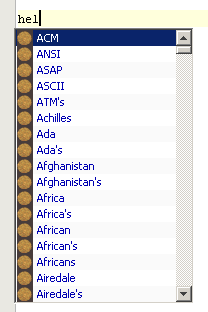

Apache NetBeans
Apache NetBeansLatest release
NetBeans Code Folding Tutorial
| This tutorial needs a review. You can open a JIRA issue, or edit it in GitHub following these contribution guidelines. |
| Tutorial Downloads |
|---|
This tutorial shows you how to implement the Editor Code Folding API. You will be shown how to implement the API in the context of text files. When a text file is opened in the IDE, a new code fold will be created for each paragraph in the file, as shown here:

In addition, you will provide the user with an extension to the Options window. The Options window extension will allow your users to select a text file containing the words that should be displayed in the code completion box.
When this tutorial is complete, the Projects window will contain the files shown in the illustration below. Note that the only files that relate directly to the Editor Code Completion API are those that are selected in the screenshot:

The following topics are covered in this tutorial:
This tutorial can be completed in 60 minutes.
For more information on creating NetBeans plug-in modules, see the NetBeans Development Project home on the NetBeans website. If you have questions, visit the NetBeans Developer FAQ or use the feedback link at the top of this page.
Creating the Module Project
Before you start writing the module, you have to make sure you that your project is set up correctly. NetBeans IDE 5.x provides a wizard that sets up all the basic files needed for a module.
-
Choose File > New Project. Under Categories, select NetBeans Plug-in Modules. Under Projects, select Module Project and click Next.
-
In the Name and Location panel, type
TextFileDictionaryin Project Name. Change the Project Location to any directory on your computer, such asc:\mymodules. Leave the Standalone Module radiobutton and the Set as Main Project checkbox selected. Click Next.
-
In the Basic Module Configuration panel, replace
yourorgherein Code Name Base withnetbeans.modulesso that the whole name isorg.netbeans.modules.textfiledictionary. LeaveTextFileDictionaryas the Module Display Name. Leave the location of the localizing bundle and XML layer, so that they will be stored in a package with the nameorg.netbeans.modules.textfiledictionary. Click Finish.
The IDE creates the TextFileDictionary project. The project contains all of your sources and project metadata, such as the project’s Ant build script. The project opens in the IDE. You can view its logical structure in the Projects window (Ctrl-1) and its file structure in the Files window (Ctrl-2).
Recognizing Text Files
By default, the IDE does not give text files any special treatment. While JSP files, Java files, and HTML files (as well as many other types of files) have distinct syntax coloring, for example, the text file is not recognized. Before we can provide code completion for text files, we first need to make sure that the IDE will recognize text files and that the IDE will be able to distinguish text files from all other types of files. To do this, we need to create a loader that will load text files for us. The File Type wizard generates all the files that we will need.
-
Right-click the
TextFileDictionaryproject and choose New > File Type.
-
In the New File Type wizard, specify that
text/x-textwill be our MIME type. In the Extension(s) text field, type "txt". This will tell the IDE that files with the extension "txt" belong to the MIME typetext/x-text. Later, we will see in the XML layer file that various actions will be registered for text files within a folder for thetext/x-textMIME type. Click Next.
-
In the Name, Icon and Location panel, type "Text" in Class Name Prefix. This will ensure that all the files created by this wizard will have the prefix "Text". You could type anything you want here, this prefix has no impact on anything other than the names of the generated files. However, since we are dealing with text files, we type "Text" here.
Optionally, you can browse to an icon with a dimension of 16x16 pixels. This icon will be displayed in explorer windows such as the Projects window, just like the icons for the other file types. However, no icon is needed.
-
Click Finish. The IDE generates various files. We will not need to modify any of them in this tutorial. If you would like to know what each of these files is for, see the Recognizing a File Type Tutorial.
Extending the Options Window
In this section, we will extend the Options window. Using a simple wizard, we will get a skeleton implementation of an Options window extension. Once we have that, we will add a JPanel, a JTextField, a JLabel, and a JButton. When the user clicks the JButton, they will be able to browse to a file on disk containing the words that will appear in the code completion box. Here, we are only concerned with letting the user get the file. Later, we will integrate the chosen file into the code completion box.
-
Right-click the
TextFileDictionaryproject and choose New > File/Folder. In the NetBeans Module Development category, choose Options Panel. Click Next.
Two types of panels can be created. Here, we create an extension to the Miscellaneous panel in the Options window.
-
Type "Dictionary File" in both the Title and the Tool Tip fields. Click Next.
-
Change the Class Name Prefix to "Text". Note that, when you do so, the Created Files area in the wizard shows you what the files will be named. In each case, the Class Name Prefix will be prepended to the file in question.
-
Click Finish. The IDE generates various files. It also adds registration entries in the XML layer file.
-
Open TextPanel.java. Notice that it opens in a visual designer. Drag and drop a JPanel onto the form. In the Properties window, change the background color to white. Using the Properties window again, add a titled border with the text "File Location".
-
Add a JLabel, a JTextField, and a JButton. Design the components so that the panel looks as follows:

-
Right-click the JButton and choose Events > Action > actionPerformed. In the jButton1ActionPerformed event, paste the following code:
String filename = jTextField1.getText();
JFileChooser chooser = new JFileChooser(new File(filename));
// Show open dialog; this method does not return until the dialog is closed:
int result = chooser.showOpenDialog(this);
// Determine which button was clicked to close the dialog:
switch (result) {
case JFileChooser.APPROVE_OPTION:
File selFile = chooser.getSelectedFile();
jTextField1.setText(selFile.getAbsolutePath());
break;
case JFileChooser.CANCEL_OPTION:
// Cancel or the close-dialog icon was clicked:
break;
case JFileChooser.ERROR_OPTION:
// The selection process did not complete successfully:
break;
}This will let the user browse to a file on disk. When prompted by the lightbulb, let the IDE add import statements for java.io.File and javax.swing.JFileChooser .
-
In the source, add this line inside the
load()method:
jTextField1.setText(Preferences.userNodeForPackage(TextPanel.class).get("DICTIONARY_KEY", ""));Put the cursor on the line above. A lightbulb appears. When you click it, you can let the IDE add the necessary import statement. For details on the Preferences API, see the standard JDK Javadoc.
-
In the
store()method, put the following line of code:
Preferences.userNodeForPackage(TextPanel.class).put("DICTIONARY_KEY", jTextField1.getText());-
Right-click the TextFileDictionary project node in the Projects window. Choose Install/Reload in Target Platform.
In the Tools menu, choose Options. Check that you see the following in the Miscellaneous panel:

-
Click the browse button and browse to a file containing the words you want to display in the code completion box. For example, if you download this file from the Jazzy - Java Spell Check API on SourceForge.net, you will have a file containing a very long list of English words.
Implementing the Code Completion Provider
The first class we will deal with when creating a code completion feature for text files is the CompletionProvider. As the user types in an editor, the code completion infrastructure asks all code completion providers registered in the XML layer file to create CompletionTasks. The tasks are created by the CompletionProvider.createTask method. What happens when the method is invoked is up to the implementation. In our implementation, we will create a CompletionItem for the entries retrieved from the file selected in the Options window, using the extension created in the previous section.
-
Right-click the
TextFileDictionaryproject and choose New > Java Class.
-
In Class Name, type TextCompletionProvider. In Package, choose
org.netbeans.modules.textfiledictionary. Click Finish.
-
Before implementing the CompletionProvider class, let’s register it in the XML layer file. Open the XML layer file, and right below the opening
<filesystem>tag, add the following tags:
<folder name="Editors">
<folder name="text">
<folder name="x-text">
<folder name="CompletionProviders">
<file name="org-netbeans-modules-textfiledictionary-TextCompletionProvider.instance"/>
</folder>
</folder>
</folder>
</folder>As explained earlier, because of the entries specified above, whenever the user types a character of any kind in a file with a MIME type of tex/x-text , the code completion infrastructure will ask the TextCompletionProvider to create its CompletionTask. In the next steps we will define our CompletionTask.
Getting Started with the CompletionProvider
In this section we create a skeleton implementation of our CompletionProvider. We also make the file that the user sets in the Options window available to the CompletionProvider.
-
Right-click the
TextFileDictionaryproject and choose Properties. In the Project Properties dialog box, click Libraries. Click Add next to the Module Dependencies list. Scroll to Editor Code Completion and click OK. Click OK again to exit the Project Properties dialog box.
-
In the TextCompletionProvider class, change the signature so that the class
implements CompletionProvider. Place the cursor on the line that defines the signature. A lightbulb appears. Click it and the IDE adds an import statement fororg.netbeans.spi.editor.completion.CompletionProvider. The lightbulb appears again. Click it again and the IDE creates skeleton methods for the two methods required by the CompletionProvider class.
You should now see this:
package org.netbeans.modules.textfiledictionary;
import javax.swing.text.JTextComponent;
import org.netbeans.spi.editor.completion.CompletionProvider;
import org.netbeans.spi.editor.completion.CompletionTask;
public class TextCompletionProvider implements link:https://bits.netbeans.org/dev/javadoc/org-netbeans-modules-editor-completion/org/netbeans/spi/editor/completion/CompletionProvider.html[CompletionProvider] {
public TextCompletionProvider() {
}
public link:https://bits.netbeans.org/dev/javadoc/org-netbeans-modules-editor-completion/org/netbeans/spi/editor/completion/CompletionTask.html[CompletionTask] link:https://bits.netbeans.org/dev/javadocorg-netbeans-modules-editor-completion/org/netbeans/spi/editor/completion/CompletionProvider.html#createTask(int,%20javax.swing.text.JTextComponent)[createTask(int i, JTextComponent jTextComponent)] {
}
public int link:https://bits.netbeans.org/dev/javadoc/org-netbeans-modules-editor-completion/org/netbeans/spi/editor/completion/CompletionProvider.html#getAutoQueryTypes(javax.swing.text.JTextComponent,%20java.lang.String)[getAutoQueryTypes(JTextComponent jTextComponent, String string)] {
}
}Click the links above to find out more about the classes and methods. Note that you will see a few red error markings. Don’t worry about these yet, they’re just there to tell you that the methods need to return something. We will work on this in the following steps.
-
Next, let’s make the dictionary file that the user defines in the Options window available to the
createTaskmethod. At the start of the method, add the following:
Preferences pref = Preferences.userNodeForPackage(TextPanel.class);
dict = pref.get("DICTIONARY_KEY", "");
pref.addPreferenceChangeListener(new PreferenceChangeListener() {
public void preferenceChange(PreferenceChangeEvent evt) {
if (evt.getKey().equals("DICTIONARY_KEY")) {
dict = evt.getNewValue();
}
}
});Above, we retrieve the preference set by the user, via the key. We also want to make sure that when the user selects a different file, that the changed file is immediately reflected in the code completion box. The PreferenceChangeListener above listens for changes to the key, whenever a new task is created. As pointed out earlier, a new task is created at each keystroke, because the code completion infrastructure asks the MIME type’s registered completion providers to create tasks at each keystroke.
Note that you need to declare the String dict at the top of the file:
private String dict;When prompted by the lightbulb, let the IDE add import statements for java.util.prefs.PreferenceChangeEvent , java.util.prefs.PreferenceChangeListener , and java.util.prefs.Preferences .
Getting Started with the CompletionTask
In this section we create a skeleton implementation of AsyncCompletionTask. In the next sections, we will fill this skeleton method out.
-
In the createTask method, below the code from the previousb section, add the following lines:
return new AsyncCompletionTask(new AsyncCompletionQuery() {
});Here, we’re returning AsyncCompletionTask, which will allow for the asynchronous creation of our task. The class comes from the org.netbeans.spi.editor.completion.support package, which provides several useful supporting classes for code completion implementations. We will use several of them in this tutorial.
-
Place the cursor on the line. Click the lightbulb that appears and let the IDE add import statements. Also let it create a skeleton method for the query method.
At this stage, the createTask method should look as follows:
public CompletionTask createTask(int i, JTextComponent jTextComponent) {
Preferences pref = Preferences.userNodeForPackage(TextPanel.class);
dict = pref.get("DICTIONARY_KEY", "");
pref.addPreferenceChangeListener(new PreferenceChangeListener() {
public void preferenceChange(PreferenceChangeEvent evt) {
if (evt.getKey().equals("DICTIONARY_KEY")) {
dict = evt.getNewValue();
}
}
});
return new AsyncCompletionTask(new AsyncCompletionQuery() {
protected void query(CompletionResultSet completionResultSet, Document document, int i) {
}
});
}Getting Started with the AutoQueryType
In this section we return 0 as our AutoQueryType, so that the code completion box does not appear automatically, but only when requested by the user.
-
Before filling out the query method, let’s look at the getAutoQueryTypes(JTextComponent jTextComponent, String string) method. This method determines whether the code completion box appears automatically or not. For now, let’s return 0. This means that the code completion box will never appear unless the user explicitly asks for it. So, this method should now look as follows:
public int getAutoQueryTypes(JTextComponent jTextComponent, String string) {
return 0;
}By default, the user would press Ctrl-Space to make the code completion box appear. Later, we can add a new option to our Options window extension, such as a checkbox which will change the int returned in this method from 0 to 1, so that the code completion box appears automatically. (There are also other types of queries, as shown here.)
Implementing the Code Completion Item
In this section we will create a class that implements CompletionItem. Once we have defined this class, we will fill out the query method in the CompletionProvider class. The CompletionProvider will create instances of our CompletionItem.
-
Right-click the click the
TextFileDictionaryproject and choose New > Java Class. In Class Name, type TextCompletionItem. In Package, chooseorg.netbeans.modules.textfiledictionary. Click Finish.
-
We will return to this class in later steps. For now, we will fill out the query method that we defined in the CompletionProvider class. Fill out the AsyncCompletionTask as follows, and note the explanatory comments in the code:
return new AsyncCompletionTask(new AsyncCompletionQuery() {
protected void query(CompletionResultSet completionResultSet, Document document, int i) {
int startOffset = i-1;
try {
FileReader fr = new FileReader(dict);
BufferedReader br = new BufferedReader(fr);
String record = new String();
while ((record = br.readLine()) != null) {
completionResultSet.addItem(new TextCompletionItem(record, startOffset, i));
}
} catch (IOException ex) {
ex.printStackTrace();
}
completionResultSet.finish();
}
},jTextComponent);Note that a red underline remains, after you let the IDE add various import statements. The error underline tells you that the CompletionItem’s constructor does not expect the values that you are passing to it. In the next step, we will fill out the CompletionItem so that it meets the requirements of the CompletionProvider.
-
In the TextCompletionItem class, change the signature so that the class
implements CompletionItem.
-
Let the IDE create import statements and skeleton implementations for the class’s required methods.
-
Read the entry in the NetBeans Javadoc for CompletionItem to begin to understand what each of the methods is for.
For now, we will implement a minimal completion item, just enough to be able to compile the module and see the code completion box. Later, we will add a lot more detail to the implementation.
-
In the CompletionItem class, replace the constructor with the following:
private static Color fieldColor = Color.decode("0x0000B2");
private static ImageIcon fieldIcon = null;
private ImageIcon _icon;
private int _type;
private int _carretOffset;
private int _dotOffset;
private String _text;
public TextCompletionItem(String text, int dotOffset, int carretOffset) {
_text = text;
_dotOffset = dotOffset;
_carretOffset = carretOffset;
if(fieldIcon == null){
fieldIcon = new ImageIcon(Utilities.loadImage("org/netbeans/modules/textfiledictionary/icon.png"));
}
_icon = fieldIcon;
}Note that here we’re referencing an icon. This is the icon that will appear next to each entry represented by the CompletionItem in the code completion box. The icon can be any icon with a dimension of 16x16 pixels. For example, the illustration at the start of this tutorial makes use of this icon:
If you want, you can right-click the image above and save it to the location specified in the ImageIcon definition above.
-
Next define the getPreferredWidth() and render() methods as follows:
public int getPreferredWidth(Graphics graphics, Font font) {
return CompletionUtilities.getPreferredWidth(_text, null, graphics, font);
}
public void render(Graphics g, Font defaultFont, Color defaultColor,
Color backgroundColor, int width, int height, boolean selected) {
CompletionUtilities.renderHtml(_icon, _text, null, g, defaultFont,
(selected ? Color.white : fieldColor), width, height, selected);
}Define the getSortText() method as follows:
public CharSequence getSortText() {
return _text;
}-
Finally, create dummy implementations of the remaining methods. So, return
nullforcreateDocumentationTask(),createToolTipTask(), andgetInsertPrefix(). Then returnfalseforinstantSubstitution()and return0forgetSortPriority().
-
Right-click the module and choose Install/Reload in Target Platform. A new instance of the IDE starts up and installs your module. In the Tools menu, choose Options. In the Miscellaneous panel, browse to the file containing the words that you want to see in the code completion box. Open a text file in the IDE. Type something and press Ctrl-Space.
You should now see the following:

| When you press Enter, nothing happens. That is because we have not defined the defaultAction() method yet. We will do so in the next section. Also note that the list does not narrow while you are typing. That is because we have not created a filter yet. The filter will detect what we are typing and adjust the entries in the list accordingly. We will create a filter in a later section. |
Defining the Action
In this section we specify what happens when the user presses the Enter key or clicks the mouse over an entry in the code completion box.
-
In the same way that you set a dependency on the Editor Code Completion API, set a dependency on the Editor Library API.
-
Define a new method, called
doSubstitute. We will call this method from ourdefaultAction()method. We will also call it from the processKeyEvent() method.
private void doSubstitute(JTextComponent component, String toAdd, int backOffset) {
final BaseDocument doc = (BaseDocument) component.getDocument();
final int caretOffset = component.getCaretPosition();
String value = _text;
if (toAdd != null) {
value += toAdd;
}
doc.atomicLock();
try {
doc.remove(_dotOffset+1, _carretOffset-_dotOffset-1);
doc.insertString(_dotOffset+1, value, null);
component.setCaretPosition(component.getCaretPosition() - backOffset);
} catch (BadLocationException e) {
ErrorManager.getDefault().notify(ErrorManager.INFORMATIONAL, e);
} finally {
doc.atomicUnlock();
}
}-
Fill out the
defaultAction()andprocessKeyEevent()methods as follows:
public void defaultAction(JTextComponent jTextComponent) {
doSubstitute(jTextComponent, null, 0);
Completion.get().hideAll();
}
public void processKeyEvent(KeyEvent evt) {
if (evt.getID() == KeyEvent.KEY_TYPED && evt.getKeyCode() == KeyEvent.VK_ENTER) {
doSubstitute((JTextComponent) evt.getSource(), _text, _text.length() - 1);
evt.consume();
}
}Note that, among other import statements, you need an import statement for org.netbeans.api.editor.completion.Completion .
-
Install the module again. Notice that when you press Enter or click the mouse over an entry in the code completion box, it is added at the cursor in your text file.
Defining the Filter
In this section we enable the code completion box to narrow while the user is typing. In this way, when the user types 'hel', only words that begin with those letters are shown in the code completion box. The filter is defined in the TextCompletionProvider class.
-
In the TextCompletionProvider class, add this right above the
tryblock, in the query method:
String filter = null;
final BaseDocument bDoc = (BaseDocument)document;
try {
bDoc.readLock();
final int lineStartOffset = Utilities.getRowFirstNonWhite(bDoc, i);
if(lineStartOffset > -1 && i > lineStartOffset){
final char[] line = bDoc.getChars(lineStartOffset, i-lineStartOffset);
final int whiteOffset = indexOfWhite(line);
filter = new String(line, whiteOffset+1, line.length-whiteOffset-1);
if(whiteOffset > 0){
startOffset = lineStartOffset + whiteOffset;
} else{
startOffset = lineStartOffset - 1;
}
}
} catch (BadLocationException ex) {
ErrorManager.getDefault().notify(ex);
} finally{
bDoc.readUnlock();
}-
Right at the end of the TextCompletionProvider, add the following method:
static int indexOfWhite(char[] line){
int i = line.length;
while(--i > -1){
final char c = line[i];
if(Character.isWhitespace(c)){
return i;
}
}
return -1;
}-
Finally, rewrite the interaction with the TextCompletionItem so that, if there is a match between the start of the word being typed and the words in the text file, only the matching words in the text file are shown in the code completion box:
if (filter != null) {
while ((record = br.readLine()) != null) {
if(record.startsWith(filter)){
completionResultSet.addItem(new TextCompletionItem(record, startOffset, i));
}
}
} else {
while ((record = br.readLine()) != null) {
completionResultSet.addItem(new TextCompletionItem(record, startOffset, i));
}
}-
Install the module again and notice that this time the list of words narrows while you are typing:

-
Use the Options window to select a different file. Notice that the very next time you press Ctrl-Space, the entries from the new file appear in the code completion box:

Applying What You Have Learned
Whenever an entry is selected in the code completion box, save it to a new file. Create another CompletionItem class that loads the new file and places the entries before the entries from the first file (hint: use getSortPriority ). Make sure that the second CompletionItem class uses a new icon, so that the user is able to distinguish the selected entries from the standard list of entries provided by the first CompletionItem. Extend the Options window further so that the user can specify the supporting file, to which you will write the selected entries.
The ZIP file at the top of this tutorial includes the extension to the Options window as well as the additional CompletionItem and its integration in the CompletionProvider class.
Next Steps
For more information about creating and developing NetBeans modules, see the following resources: